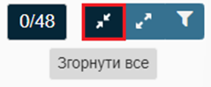

Фільтрація та відображення вмісту опитувальників на екрані
Перед початком оцінювання користувач може налаштувати відображення вмісту опитувальників та/або безпосередньо запитань, з якими він працюватиме (наприклад, здійснює вибір всіх запитань, для яких надано відповідь Так). Для цього використовується функціонал спеціальних можливостей вкладки Оцінювання.

Для налаштування відображення вмісту опитувальників на екрані зверніть увагу на кнопки:
 |

Піктограми "Згорнути все"/"Розгорнути все"
Активуючи дії по піктограмах "Згорнути / Розгорнути все" у верхньому правому куті екрану, користувач має змогу налаштувати відображення кількості опитувальників на сторінці у вкладці Оцінювання.
Фільтр запитань
Даний фільтр допомагає користувачу здійснити адаптацію контенту, з яким він працюватиме.
Інтерактивне вікно фільтру запитань
За допомогою активації відповідного фільтру користувач здійснює вибір запитань, з якими працюватиме.
На екрані відображатимуться лише вибрані запитання кожної з цілей, про що видається відповідне повідомлення.
При деактивації всіх фільтрів на вкладці Оцінювання відображається повідомлення про відсутніть застосованих практик.
підготовлено у редакторі Help & Manual 9.3.0